Vamos a ver cómo pasar nuestro proyecto de Go a Go Modules, muy útil para dejar de utilizar los comandos de exportación de variables de go como gopath, goroot, etc, cada vez que queremos ejecutar nuestro proyecto. De esta manera con tan solo ejecutar go run main.go ya nos funcionaria.
Para empezar a usar Go Mod en nuestro proyecto, tan solo tenemos que escribir go mod init *nombre_de_modulo* situados en la carpeta donde se encuantra el archivo main.go. En mi caso es go mod init go_server. El nombre del módulo será normalmente el nombre del propio proyecto, pero se puede llamar como queráis. Esto nos creará un fichero go.mod en el cual no tendremos que tocar nada.
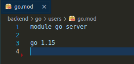Ahora toca descargar las dependencias para ese módulo. Esto servirá tanto para la primera vez como para cada vez que añadamos nuevas dependencias. Para ello, escribir en la terminal go mod tidy. Las próximas veces que instaleis paquete con go get o otro comando irán incluyéndose automáticamente en este fichero
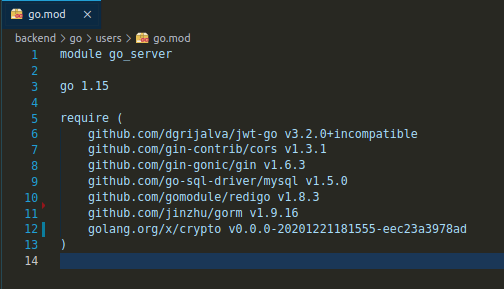Go mod tidy se encargará de incluir en el go.mod todas las dependencias necesarias para nuestros tests, así como todas las dependencias necesarias en nuestro proyecto (digamos que recorre toda tu arquitectura de paquetes buscando las depenencias que debe instalar). También creará el fichero go.sum, el cual se encargará de gestionar nuestras versiones e indicar el hash de integridad de cada una de ellas.
En este punto vamos a refactorizar nuestra aplicación entera en microservicios, de esta forma cada "entidad" del proyecto se ejecutará en un puerto diferente independientemente.
Para ello, debemos separar cada "entidad" de nuestro proyecto en diferentas carpetas, cada una con su main.go, go.mod, y archivos y ficheros necesarios para que funcione. En mi caso tengo dos microservicios, el de users y el de recipes. Cada uno tiene su main.go y go.mod y los mismos ficheros de configuración de la base de datos, pero luego cada uno tiene sus propios ficheros, como los controladores, modelos, etc.
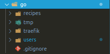 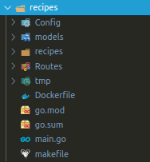 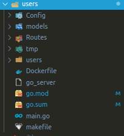La arquitectura de mis carpetas se reparte de la siguiente manera:
Config: Aspectos de configuración globales para cada microservicio, en mi caso archivos de configuración de la base de datos y de redis.
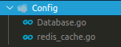models: Esta carpeta contiene todos los modelos del proyecto. En cada microservicio tendré los modelos repetidos.
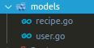Routes: En este archivo se definen algunas rutas/endpoints del microservicio, y los encabezados CORS.
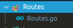users / recipes: Aquí tengo varios ficheros que son independientes de cada microservicio. Tengo los controladores, donde se definen las funciones de cada endpoint; los middlewares, para proteger las rutas; las funciones específicas del modelo principal del microservicio (por ejemplo buscar en base de datos un usuario o una receta, eliminarlo, etc); las rutas/endpoints (antes en la carpeta Routes se definian los prefijos para cada endpoint, que se definen aquí); y los validators y serializers, para validar datos y enviarlos como JSON.
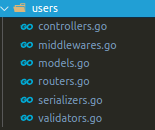 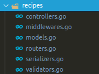Con esto ya estarían los microservicios terminados. Ahora en cada main.go defino que cada uno se ejecute por un puerto diferente:
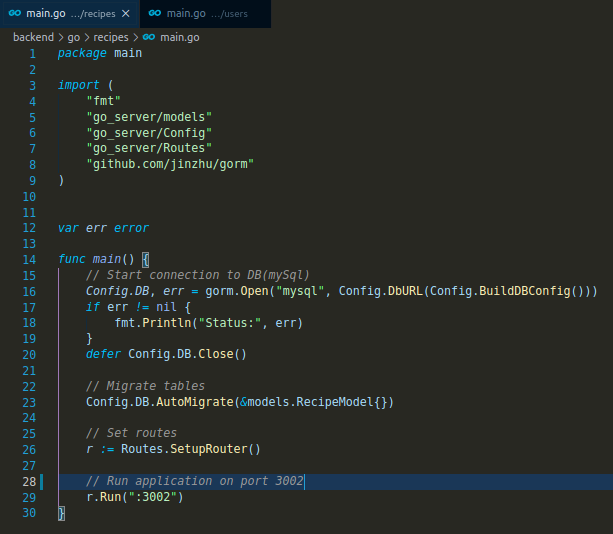 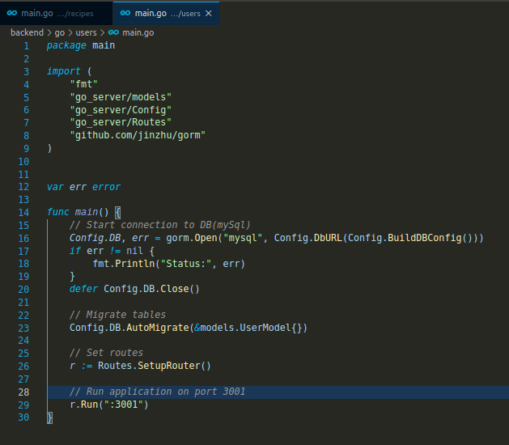Ahora voy a enseñar como me han quedado los servicios de go en el docker-compose.yml con la propiedad extends. Esta propiedad sirve para extender otro servicioal actual servicio.
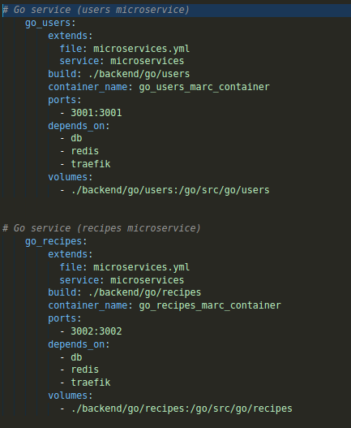Con extends le digo a cada servicio que me extienda el servicio 'microservices' del archivo microservices.yml, que quedaría así:
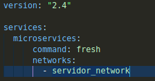Con la versión 3+ de Docker Compose no podia utilizar la propiedad extends, así que tuve que bajarla a la 2.4.
Esta propiedad me sirve para extender caracterísitcas en común de cada microservicio, en mi caso el comando a ejecutar y la network.